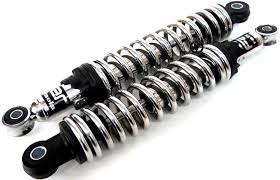

refacciones de motocicletas
alternador precio: $350 |
amortiguadores precio: $800  |
bomba de gasolina precio: $120
|
bujia precio: $45 |
cadena precio: $180
|
disco precio: $135 |
equipo de frenos precio: $1500
|
faros precio: $345
|
filtro de alto flujo precio: $200
|
fusibles precio: $12 |
llantas precio: $300 |
marcadores precio: $600 |
marcha precio: $450 |
puños precio: $240
|
rin precio: $550 |
swich precio: $180 |
valeros precio: $150 |
frenos precio: $400 |